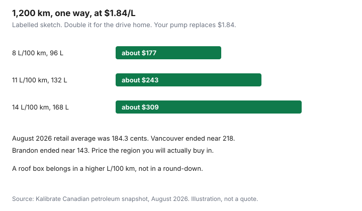

Travel · Canada
Canadian Road Trip Budgeting: Fuel, Camping, and Hidden Costs That Blow the Plan
A road trip looks cheap because the bedroom is the back seat and the flight is zero. Then the sheet grows: litres at a prairie price that is not the Vancouver price, a campsite that was $34 until the reservation fee and the park gate, a ferry you remembered as “not that much,” and dinner in a town with one restaurant. The budget that survives is four lines you fill before you pick the route: fuel, beds, food, and the tolls and tickets that are not optional once you are there.
This is a leisure trip, not a commute comparison. Short city hops belong in other guides. Figures were read on 23 Sep 2026 from Parks Canada, Ontario Parks, BC Parks, Alberta Parks, and an August 2026 national fuel snapshot. Pump prices move weekly. Campground prices differ by park. Use the method, then replace every number with the quote for your week.
Disclosure: Roadside-assistance memberships and car-rental comparison sites are offer types. Saving Optimizer may earn a commission if we later add those links. We do not currently claim a CAA, insurer, or rental partnership. Insurance wording here is a question to ask, not a policy. Education only.
Key takeaways
- Litres = (kilometres ÷ 100) × the L/100 km you actually get with the car loaded. A 1,200 km leg at 9 L/100 km is 108 litres.
- Kalibrate’s Canadian retail gasoline average was 184.3 cents per litre in August 2026. The same snapshot ended the month at 218.0 in Vancouver and 143.2 in Brandon. Use the region you will drive.
- Parks Canada regular camping fees are back as of 8 September 2026. Banff examples: toilets-only about $26.75, toilets and showers $34, electrical $40, full hook-up $47.25. Admission is a separate line. The Discovery Pass break-even is a different guide.
- Provincial systems are not the same product. Ontario Parks fee-level AA non-electrical is $46.50 plus HST. BC Parks adds a transaction fee and, from 15 May 2026, a $20 non-resident camping fee. Alberta Parks books on a 90-day window.
- Food is the swing line. A cooler that covers breakfast and lunch beats a restaurant at every stop. One dinner out is a choice. Three meals out is a second hotel.
- Write a daily total for two adults and, separately, for four people. Hidden lines are ferries, tolls, timed entry, and tires or a tow you hoped to skip.
Estimate fuel with realistic L/100 km and current regional pump prices
The number on the window sticker is a lab result. A loaded car, a roof box, headwinds on the Trans-Canada, and summer air conditioning all use more fuel. Use the trip computer from the last highway drive, or add a litre or two per 100 km to the sticker if you have never measured. Call that your planning rate. Do not use a hybrid city figure for a mountain highway.
The formula is dull on purpose. Kilometres divided by 100, times L/100 km, equals litres. Litres times dollars per litre equals the fuel line. A 1,200 km highway leg is not one tank. Count the return if you are not flying home.
| Vehicle, planning rate | 1,200 km one way | Fuel at $1.84/L | Same litres at $2.18/L |
|---|---|---|---|
| Car, 8 L/100 km | 96 L | $177 | $209 |
| Loaded car or small SUV, 11 L/100 km | 132 L | $243 | $288 |
| Truck or van, 14 L/100 km | 168 L | $309 | $366 |
The right-hand column is why a national average is a starting point only. Kalibrate’s August 2026 snapshot (published 4 September 2026) put the Canadian retail average at 184.3 cents per litre, down a cent on the month and still far above the year before. Vancouver ended that month at 218.0 cents, the high in their set. Brandon, Manitoba ended at 143.2 cents, the low. A Rockies week that starts in Calgary and detours toward the coast should be priced in pieces, not at one national cent. Statistics Canada’s monthly city table (18-10-0001-01) is the public series when you want a government average. It lags the pump. The morning you leave, use the price on the highway you will actually buy.

Camping vs motel nights: Parks Canada and provincial park fee ranges
The Canada Strong Pass, including free admission and 25 percent off Parks Canada camping, ended 7 September 2026. Regular fees apply from 8 September 2026. A campsite is not included in a Discovery Pass. Admission is a separate purchase. The pass break-even, adult daily $12.25 versus adult annual $83.50 at Banff’s regular rate, lives in the Discovery Pass guide. Do not redo it here. If you enter once and stay inside the park, you may be paying one admission, not one per night. Count gate days, then count nights.
Parks Canada’s Banff fee page, regular rates, is a useful national-park anchor because the mountain parks are where road-trip budgets go to die. One night, read 23 Sep 2026:
- Primitive, about $22 (examples: Mosquito Creek, Rampart Creek).
- Unserviced with toilets only, about $26.75.
- Unserviced with toilets and showers, about $34 (Tunnel Mountain, Lake Louise, Johnston Canyon, Two Jack Lakeside).
- Electrical, about $40. Tunnel Mountain with water, sewer, and electrical, about $47.25.
- Lake Louise overflow, about $13.50. Equipped campsites at Two Jack, about $86.50.
Provincial parks are a different operator and a different price.
- Ontario Parks, fees in force 1 April 2026 through 31 March 2027: fee-level AA, the top published band, is $46.50 non-electrical plus HST ($52.55) and $52.50 electrical plus HST ($59.33) at the regular rate. Many parks sit on a lower fee level. Look up the park. AA is the ceiling example, not the average site.
- BC Parks: the base fee varies by park and season, with higher fees at 59 high-use parks in peak summer. The reservation transaction fee is $6 per site per night, capped at $18 per site, plus tax. From stays that begin on or after 15 May 2026, visitors who do not live in B.C. pay an extra $20 camping fee. A non-resident of the province is not the same thing as a non-resident of Canada.
- Alberta Parks: regular campsites book on a rolling 90-day window that opens at 9:00 a.m. MT. Comfort camping uses a longer window. The nightly fee is on the site you select. Kananaskis and the foothills are provincial. A Banff gate pass does not cover them.
A motel night wins when the campground is full, the weather is past tent season, or the “cheap” site plus two restaurant meals plus a paid shower in town exceeds a room with a kitchenette. Run the room through the all-in lodging sheet so the municipal tax is in the motel column before you declare camping the winner. Three camping nights at $34, plus a $12.25 adult gate for two people, is about $127 before a reservation fee. Three motel nights at $160 before tax are a different trip. Neither column is morally better. Write both.
Food cooler plan vs restaurants every meal
Fuel is visible. Food is where a four-day trip adds a second car payment. A restaurant breakfast, lunch, and dinner for two adults is easy to sketch at $40, $50, and $90 before tips and tax in a tourist town, about $180 a day. That sketch is a warning label, not a menu audit. Your town will differ. The point is the multiplier: three sit-down meals, every day, for four people, is the line that erases the campsite savings.
The cooler plan that holds:
- Breakfast and lunch from groceries bought before you enter the expensive town. Oatmeal, fruit, bread, cheese, and a cooked protein that survives a day on ice. Restock at a real grocery, not at the park store, when the route allows it.
- One restaurant meal, chosen, not defaulted. Dinner after a long driving day is the usual pick. Put a dollar cap on it the morning of, when you are not hungry.
- Water from the tap you trust, refilled. Bottles at a viewpoint are a convenience price.
- A camp stove only if the site allows it and you will use it. A stove you do not light is luggage. A fire ban makes the cooler plan the whole plan.
Two adults on the cooler plan, in the same labelled spirit, might be $35–$50 in groceries per day plus one $90 dinner, closer to $130 than $180, and the gap compounds. A family of four does not quadruple the grocery line if they share a pot. It does quadruple the restaurant line. That is the argument for the cooler.
Ferries, tolls, parkways, and timed-entry reservations as line items
These are not rounding errors. Each one is a row with a quantity.
- Ferries. A Vancouver Island week or a Newfoundland crossing is a vehicle fare plus passengers, and often a reservation. Pull the quote from BC Ferries or Marine Atlantic for your vehicle length and your date. Do not borrow last year’s screenshot. A fare that is “only” the passengers, with the vehicle forgotten, is how the budget misses a hundred dollars or several.
- Tolls. If the route uses a toll highway, the transponder-versus-video choice is a real dollar. Price the crossings you will make and stop. This is a vacation line, not a commuting study.
- Parkways and gates. Parks Canada admission, provincial day-use fees, and parking that is excluded from admission (Lake Louise lakeshore is the famous one) each get a row. Timed shuttles are a fare plus a booking fee. The mountain version of that list is in the Banff and Jasper guide.
- Reservations that can fail. A campsite, a ferry, and a shuttle can all require a booking before the trip exists. If the site is gone, the backup is a motel at the peak rate. Put a backup night in the sheet or accept that you will drive further.
Add the rows before you tell anyone the trip is “just gas and a tent.” If a row is zero, write zero. A blank row is how ferries get forgotten.
Vehicle prep: tires, insurance territory wording, roadside membership
A road trip is a mechanical week. The budget fails when a tire or a tow shows up as a surprise instead of a decision you already made.
Tires. Tread and pressure are the pre-trip check. If the calendar hits Québec’s winter-tire period, or a mountain pass that still has a seasonal requirement, the legal tire is part of the trip, not a suggestion. Shoulder-season Rockies driving in May or October can be summer tires in town and a different surface on the pass. Look at the forecast for the highway, not the city you leave. This is not a winter-tire shopping guide. It is a “do not start a 2,000 km trip on a bald set” line.
Insurance territory. Auto policies are written for a home province. A two-week loop through other provinces is ordinary for many policies and a problem for some, especially with a trailer, a rental car, or a long stay. Read the territorial wording, then ask the insurer one question: does this itinerary need an endorsement or a notice? Do not rely on a forum. Do not treat this paragraph as cover. Deeper vehicle-policy work stays with Insurance and with the auto guides. The only job here is to put “asked the insurer” on the list before you cross a border.
Roadside membership. A membership is an offer type: a phone number and a tow radius in exchange for an annual fee. Some credit cards already include a tow or a trip-interruption benefit. Read the kilometres and the exclusions before you buy a second product that duplicates the first. One membership for the car that is going, with the card in the glovebox as the backup you understand, is enough. A trip without either, on a highway with no shoulder, is the expensive version.
Daily budget template for 2 adults vs family of four
Build the day, then multiply by days. Do not start from “$150 a day sounds fair.” The sketch below uses the fuel method for 250 km of touring at 9 L/100 km and $1.84/L (about $41 of fuel), a Parks Canada-style $34 unserviced night split across the party, cooler food plus one shared dinner, and one small activity. It is labelled. A motel day replaces the camping row and usually replaces part of the grocery row. A zero-kilometre hiking day shrinks the fuel row and can grow the activity row.
| Line | 2 adults | Family of 4 |
|---|---|---|
| Fuel, 250 km at 9 L/100 km, $1.84/L | $41 | $41 (same vehicle) |
| Campsite, unserviced with showers | $34 | $34 (one site, if it fits) |
| Park admission, adult daily | $24.50 | $24.50 if only the adults are charged |
| Food, cooler plus one dinner | $130 | $190 |
| One low-cost activity or shuttle | $30 | $40 |
| Day total, labelled | about $260 | about $330 |
| Per person | about $130 | about $82 |
The family looks cheaper per person because the car and the site do not multiply. The family looks expensive in absolute dollars the moment the site does not fit and you add a second site, or the moment every meal is a restaurant. A second site at $34 turns the family day into about $364. Four restaurant days with no cooler can add more than that site ever saved.
Before you leave, the sheet has six filled lines: fuel at your L/100 km and your regions’ pump prices, beds (camp or motel, all-in), food (cooler days versus restaurant days), gates and parking, ferries or tolls, and a vehicle line that is either zero because you checked tires and cover or a number because you bought a membership or a tire. Then divide by people only after the total exists. Per-person math is how you compare this week with a flight week. It is not how you pretend the ferry was free.
Sources & date stamps
- Kalibrate, Canadian petroleum snapshot for August 2026 (4 Sep 2026) — retail average 184.3 cents per litre; Vancouver 218.0; Brandon 143.2. Used 23 Sep 2026 as a regional illustration, not a live pump.
- Statistics Canada table 18-10-0001-01 — monthly average retail gasoline prices by geography. The public series to prefer when you want a government city average.
- Parks Canada, Banff fees and the Canada Strong Pass end note — regular camping and admission from 8 Sep 2026; nightly amounts cited above. Used 23 Sep 2026.
- Ontario Parks, 2026 camping fees (1 Apr 2026–31 Mar 2027) — fee-level AA regular non-electrical $46.50 plus HST and electrical $52.50 plus HST. Used 23 Sep 2026.
- BC Parks, frontcountry and camping-fee pages — $6 per night transaction fee capped at $18; $20 non-resident fee for stays beginning on or after 15 May 2026. Used 23 Sep 2026.
- Alberta Parks reservations — 90-day rolling window at 9:00 a.m. MT for regular camping. Used 23 Sep 2026.
Frequently asked questions
How do I estimate fuel for a Canadian road trip?
Litres equal kilometres divided by 100, times the vehicle's real L/100 km, not the window sticker. Multiply by the pump price on the route, not a national average you liked last year. Kalibrate's Canadian retail average for August 2026 was 184.3 cents per litre, with Vancouver ending the month at 218.0 and Brandon at 143.2. Replace the price the morning you leave.
Is camping always cheaper than a motel?
On the nightly rate, often yes, and only after you add the park entry, the reservation fee, and the food you still buy. Parks Canada regular fees from 8 September 2026 include Banff unserviced sites around $26.75 to $34 and electrical sites at $40, before you count admission. Ontario Parks fee-level AA non-electrical is $46.50 plus HST. A motel that includes a shower and a kitchenette can beat three nights of cheap camping plus restaurants.
What hidden costs blow the budget?
Ferries, tolls, timed-entry shuttles, paid parking that is not included in park admission, and a campsite that was available only with electricity you did not need. Price each one from the operator the week you plan. A cooler that replaces two restaurant days is usually the larger save.
Do I need different car insurance for a cross-province trip?
Ask the insurer what the policy says about time outside your home province, and whether a rental or a trailer changes it. This page is not an insurance quote. Roadside memberships are an offer type. Compare one with any towing benefit you already have so you do not pay twice for the same tow.
How should a family of four budget a day?
Use the template: fuel, beds, food, and one activity, then divide by people and by days. A labelled sketch in this guide puts two adults near the low $200s per day and a family of four higher once beds and food double, before a splurge day. Your pump price and your campsite replace the sketch.